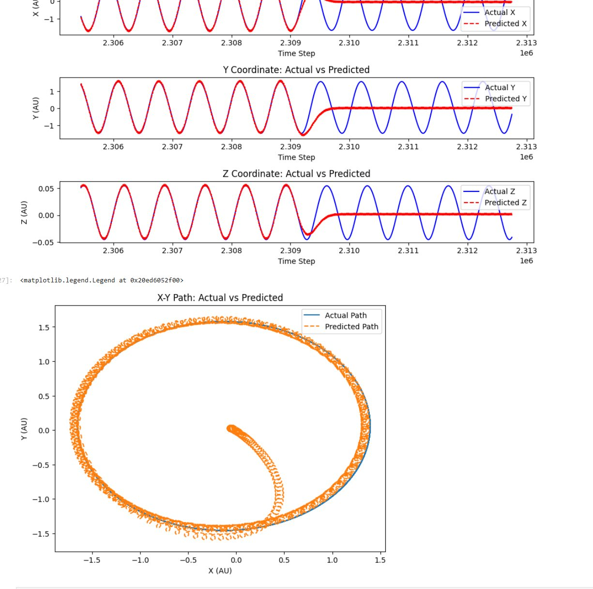
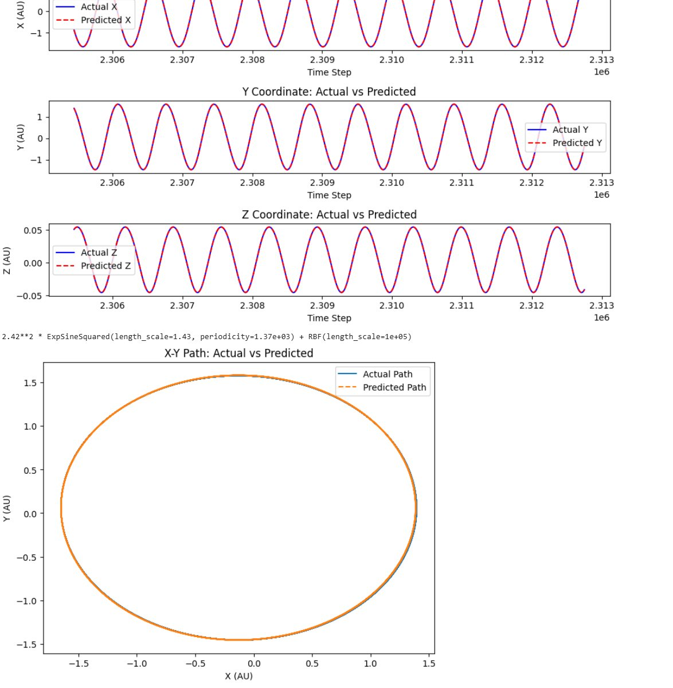
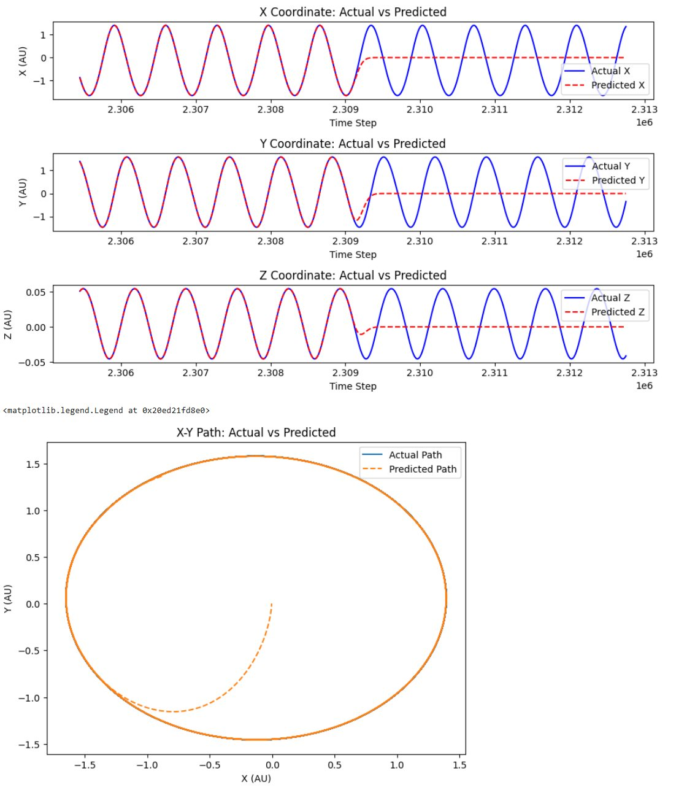
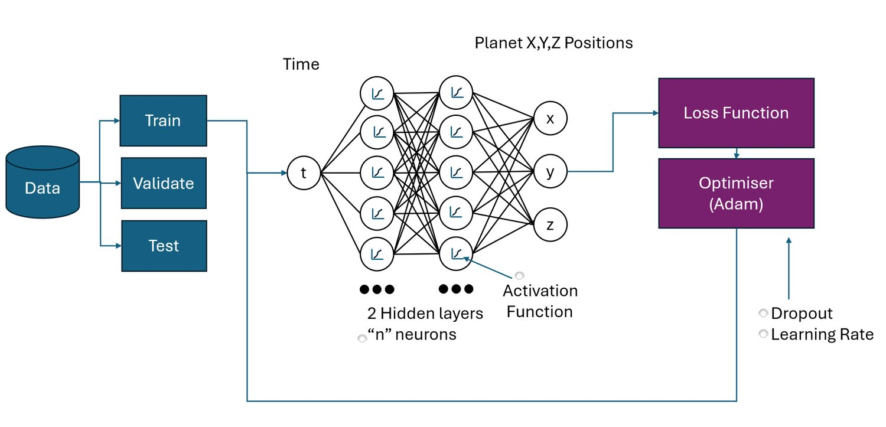

Assessment
Orbital regression.
The project predicted planetary positions from observational data and explored whether heliocentric representation made the learning problem cleaner.
OCOM5200M / Machine Learning
For the summative project I compared machine-learning approaches for modelling and predicting planetary movement, using NASA JPL Horizons data and the pleasingly awkward geometry of Mars retrograde motion.
I used the project to compare representations as well as models: geocentric and heliocentric data, MLP regression and Gaussian process regression, error measures, hyperparameter ranges and the question of whether a model finds the physics easier when the coordinate system is kinder.

Assessment
The project predicted planetary positions from observational data and explored whether heliocentric representation made the learning problem cleaner.
Models
I compared neural-network regression with Gaussian process regression, including kernel choice, periodicity and hyperparameter sensitivity.
Evaluation
The work needed error metrics, validation splits and visual checks because orbit plots can look persuasive while hiding phase or coordinate errors.
Lesson
A model is not learning in a vacuum. Periodicity, coordinate systems and physical structure all change what “hard” means.


